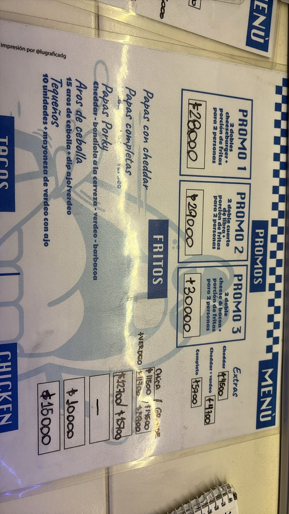
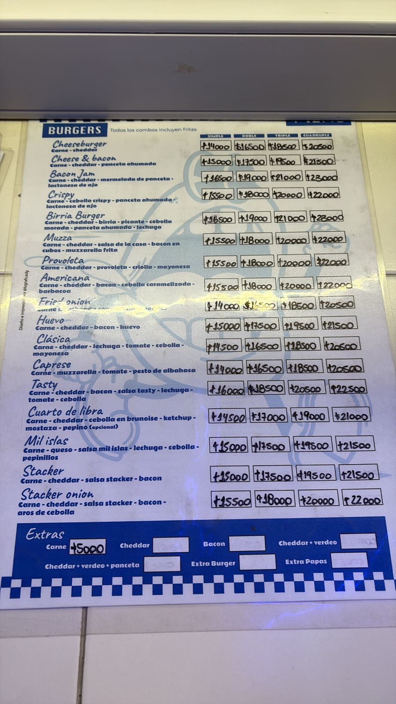
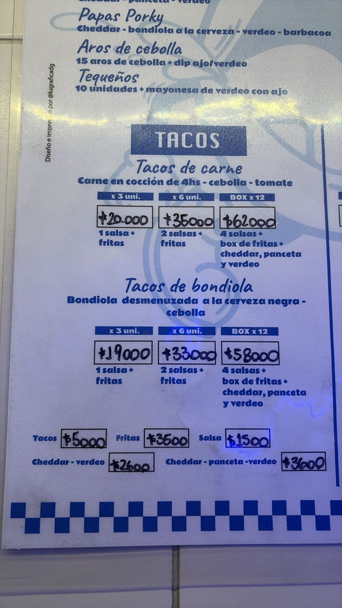
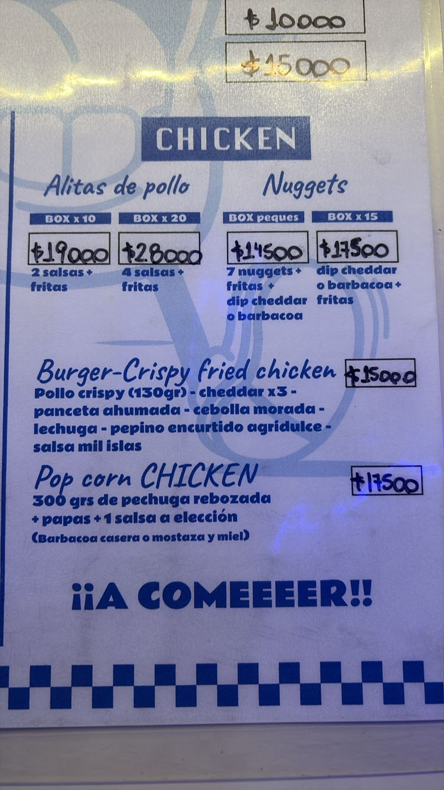

Experiencia

Proyecto 1
Producción General

Proyecto 2
Coordinación

Proyecto 3
Dirección

Proyecto 4
Dirección

Proyecto 5
Dirección
Transformando ideas en experiencias memorables.
Ver proyectos
¡Hola! Soy Antonella, tengo 23 años y soy de Buenos Aires. Me encantan el mundo del entretenimiento desde que tengo uso de razón. Siempre vi pelis, series, videos, fuí a shows y siempre me interpeló que es lo que pasa atras de lo que veía (hoy en día se que tambien pasan cosas antes y despues de eso Y ME EMOCIONA TODAVIA MÁS) De chica hice cursos de teatro y radio pero entendí que no era para mi estar frente a una camara o microfono. En el 2024 tuve la oportunidad de estudiar la carrera que tanto quise. Comenzé la licenciatura en Gestión de medios y entretenimiento en la Universidad Argentina de la Empresa. Un mundo totalmente distinto al de que venia. Ahí finalmente caí en que mi lugar es estar del otro lado. Antes, durante o despues del un proyecto, colaborando con ideas, planeando, creando, ayudando, asistiendo. Siendo parte del proceso y vivirlo desde adentro.
Producción General
Coordinación
Dirección
Dirección
Dirección



Estoy disponible para nuevos desafíos.